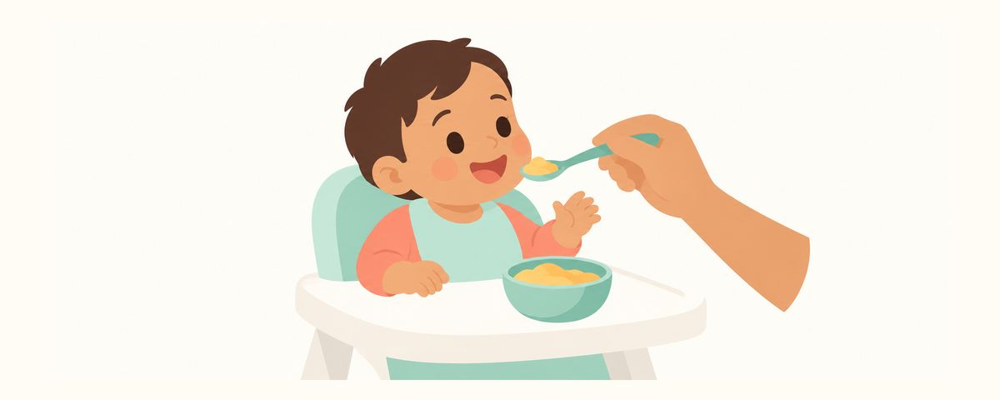

Diversification alimentaire sans sucre : jus de fruits et miel, à partir de quand ?
Les repas de bébé n'ont besoin d'aucun sucre, et on ne donne ni jus de fruits ni miel avant 12 mois. Comment faire découvrir le sucré en douceur, lire les étiquettes et prendre soin de la bouche après les repas.
En un coup d'œil
- Les repas de bébé n'ont besoin d'aucun sucre
- Pas de jus de fruits avant 12 mois
- Pas de miel avant le premier anniversaire (risque de botulisme)
Quand la diversification commence, on peut être tenté de sucrer un peu les purées « parce qu'il ne mange pas bien ». Pourtant, les premiers goûts que découvre votre bébé posent les bases de ses préférences et de la santé de ses dents. Voici pourquoi ses repas n'ont besoin d'aucun sucre, et comment lui faire découvrir le goût sucré en douceur.
C'est maintenant que ses goûts se forment
Le début de la diversification, c'est le moment où les préférences de goût de votre bébé se construisent. Les bébés aiment naturellement le sucré : s'ils s'y habituent tôt, ils acceptent parfois moins bien les aliments moins sucrés. À l'inverse, s'habituer tard au goût sucré, c'est le début de la prévention des caries.
Les repas de bébé n'ont besoin d'aucun sucre. Le goût propre des céréales, des légumes et des fruits suffit. Refuser un goût nouveau est très fréquent, et à force de le goûter plusieurs fois, le bébé finit souvent par l'accepter.
Le mécanisme des caries est simple. Les bactéries de la bouche se nourrissent du sucre et fabriquent de l'acide, qui attaque peu à peu la surface des dents. Plus les aliments sucrés sont fréquents, plus les dents restent longtemps exposées à l'acide. Les dents de lait qui viennent de sortir ont une couche extérieure fine et sont encore plus sensibles.
L'Organisation mondiale de la santé (OMS) recommande de limiter les sucres ajoutés aux aliments (sucre, sirop, miel) et ceux des jus de fruits (sucres libres) à moins de 10 % de l'apport énergétique quotidien, idéalement à moins de 5 %. L'Académie américaine de dentisterie pédiatrique conseille d'éviter les sucres ajoutés avant 2 ans.
Le goût sucré, tout doucement
Quand vous préparez ou choisissez les repas de bébé, vérifiez ces points dans l'ordre.
- N'ajoutez ni sucre ni sirop dans les purées, les bouillies ou les yaourts. Choisissez des yaourts nature, sans sucre ajouté.
- Pas de miel avant le premier anniversaire. L'intestin du bébé est encore immature, et la bactérie du botulisme présente dans le miel peut le rendre malade.
- Pas de jus de fruits avant 12 mois. Proposez plutôt le fruit lui-même, écrasé ou coupé en petits morceaux.
- Pour les petits pots et les en-cas pour bébé du commerce, vérifiez la teneur en « sucres » sur l'étiquette.
- Après les repas, essuyez ou brossez aussi la bouche avec une compresse ou une brosse. Si des dents sont sorties, brossez-les avec une trace de dentifrice fluoré de la taille d'un grain de riz.
Sur l'étiquette, lisez à la fois la ligne « dont sucres » du tableau nutritionnel et la liste des ingrédients. En plus du sucre, beaucoup d'ingrédients sucrants portent d'autres noms : fructose, glucose, oligosaccharides, sirop de glucose, sirop, concentré de fruits… Les ingrédients sont classés du plus abondant au moins abondant : si ces noms apparaissent en tête de liste, le produit est probablement très sucré.
Pour les boissons, restez simple. Un bébé qui commence la diversification n'a besoin que de lait maternel ou infantile, et d'eau. Lui faire goûter un peu d'eau dans un petit verre pendant le repas permet aussi de s'entraîner au gobelet.
Quelques erreurs fréquentes :
- mélanger du sirop ou une sauce sucrée aux purées pour qu'il mange mieux ;
- lui mettre un biscuit pour bébé dans la main dès qu'il pleurniche ;
- remplir le biberon ou le gobelet de jus de fruits ou d'une boisson sucrée à la place de l'eau.
Les petits en-cas sucrés grignotés souvent ne laissent jamais les dents se reposer. Si un en-cas est nécessaire, donnez-le à heure fixe, et proposez de l'eau quand il a soif.
Questions fréquentes
Les fruits sont sucrés : peut-on quand même en donner ?
Oui, les fruits eux-mêmes sont de bons aliments. Il suffit de les écraser ou de les couper en petits morceaux. En revanche, pas de jus de fruits pressés avant 12 mois.
Même un tout petit peu de miel, c'est interdit ?
Avant le premier anniversaire, pas de miel, quelle que soit la quantité. Le problème n'est pas la carie mais la bactérie du botulisme : le plus sûr est d'éviter même une petite quantité.
Les petits pots du commerce, c'est bien ?
Ils rendent bien service quand on manque de temps. Vérifiez la teneur en sucres et la présence de mots comme « sirop » ou « concentré » sur l'étiquette, et choisissez si possible des produits sans goût sucré ajouté.
Il n'a pas encore de dents : faut-il quand même faire attention au sucré ?
Oui. Les goûts qui se forment maintenant influencent ses habitudes alimentaires une fois les dents sorties. Éviter qu'il s'habitue au sucré avant ses dents fait aussi partie de la prévention des caries.
Dans ces cas, consultez un dentiste
- Une bande blanche apparaît sur les dents de devant, près de la gencive
- Une tache brune ou noire apparaît sur une dent
- La surface d'une dent paraît blanche et mate, comme de la craie
- Votre enfant mange ou boit souvent sucré et l'état de ses dents vous inquiète
Recevez-les au bon moment
Saisissez la date de naissance de votre enfant (ou la date prévue d'accouchement) dans l'app Calendrier Dentaire et ces articles vous parviendront sous forme de rappels au bon moment. Gratuit, sans inscription.
Sources
Les informations de cette application sont fournies à des fins éducatives générales et ne remplacent pas une consultation professionnelle. Parlez de la situation de votre enfant avec un dentiste.